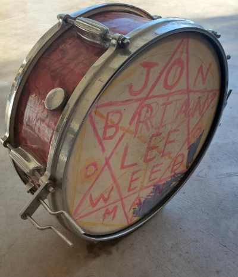

2021-09-17 / In categories Posts
Dear Stumpers:
One of the things about abandoning anonymity means that I get to write about more of my peculiar, identifying characteristics. As Stumped Mom and just Stumped Mom, I could be banal, outrageous, relatable and even, if the mood struck me, heartfelt, but there were certain things- things that were truest about me - that I could not express without completely compromising my identity.
“Write what you know” they say. Novelty sells,and so does, sex tragedy and drama. The richest material can come out of the most peculiar things about ourselves. That which is most unique and most personal can put a cross sectional statistical bullseye on your forehead.
So here it is Stumpers, a fact about me not known, on my blog until now.
I carry a rare genetic condition, X-Chromosomal factor VIII deficiency, also known as hemophilia A. I inherited this gene from my mother, who inherited it from her mother and I passed it to my daughter. As best as I can figure no single factor in my personal or family history has led to more pain, discord and generational trauma than our pesky, defective F8 gene.
Carrying a genetic disease can make you just a little bit extra sesny when it comes to reproductive rights. Which brings us to last week’s distressing news. Just in-case you’ve been hiding from bad news here it is: “After Silence From Supreme Court, Texas Clinics Confront Near-Total Abortion Ban” New York TimesBy J. David Goodman, Adam Liptak and Sabrina Tavernise Sept. 1, 2021
Was that a gut punch for you? It was for me. It barrels at me with a gutting terrifying force every time I read it. The blow is propelled by concerns for all of the people, specifically women, children and families that are going to be hurt. I fear for what it could mean for my family and my daughter if this trend in the court continues unchecked.
Clearly time we need to revisit reproductive rights and why they are important to all people. I am visiting it with a peculiar lens that I happen to have intimate access to. What do reproductive rights mean for those of us who are carriers for dangerous x-chromosomal disorders?
There is nothing straightforward about this story. It is the story of my family and it is filled with complex emotions, difficult perspectives and muddled records. I will be telling it from the only perspective that I have, my own.
This post is the launch of a new multi-part series, “Hemophilia Hustle” .
For the first 14 years of my life hemophilia was a ghost story. The history was oral, the facts were confused. The ghost’s manifestations were so frightening, rational adults would act like it wasn’t real. For me this ghost had a face, his fine features appeared in the family album in grayscale, and sepia tones. He was invariably thin, in all of his short life’s stages, often leaning on a crutch, or a sibling, or being pulled along in a wagon or a cart. His mouth was shaped much like mine and jaw like my older sisters. I like to think his smile might have looked like ours, but he’s never smiling. He was my mother’s younger brother Jon and I knew just a few things about him. He died right before my older sister was born, he had hemophilia and grownups got upset whenever they talked about it.
When it came to the family histories my mother was by far the most locacious and forthcoming source of information. As a source she was dubious at best. Mom is known broadly as an unreliable narrator who gets facts confused and omits convenient facts that don’t fit into her worldview. My mother said he died in an accident near Bremerton Washington, where he was living with my grandfather. My parents were in Frankfurt Germany, stationed with the US Army and my mother was about to give birth to Sarah when it happened. This no doubt contributed to the fog surrounding this critical family event. My grandmother wouldn’t talk about it. The memories were so painful, she did not like to have his name spoken in her presence. My sister once brought home a boy for thanksgiving named John, grandma insisted on calling him Greg.
My big sister, Sarah, was also a source of information. She was always quite willing to share tidbits of info with me that the grownups didn’t want us to know. One such secret she whispered to me in the cozy intimacy of the bottom bunk. We had older brothers, twins, who died at birth. Sarah duug out one of the last remaining relics of Jon’s existence; a snare drum head that spelled out his full name. I used to stare at the design and wonder about him, what the pattern meant. It looks like a star of David but we are not by any accounts Jewish, it looked vaguely ritualistic to me, and I was always unnerved by the object. Mom never touched it.
I remember being just six years old, sitting at the kitchen table, when Mom explained that our family had a rare disease that made people bleed and Jon had it.. For mysterious reasons, boys got it the worst. Doctors say that girls aren’t supposed to get it, yet, Mom, Grandma and Mom’s Sister Julienne all bruise easily, heal slowly and bleed badly when hurt. But it was nothing close to what we would never be sick like Jon. Jon, who was always in the hospital, who always needed injections, blood and infusions- who couldn’t play sports, and bled to death in an accident.
Later that same year, there was great joy in our household. My pregnant mother was able to get an ultrasound (a new test in 1988) and confirm that the baby she was carrying was going to be a girl. Our new little sister wasn’t going to have hemophilia! I took this as great news and I tried not to think about what exactly would have happened had the test said otherwise.
The first time I tried to talk to an adult outside the family about hemophilia was in my fourth grade special ed class. Believe it or not dear readers, I was a delayed reading and writing learner. IBy the end of the year I had grown quite fond of my one-on-one reading teacher, Mrs. Anderson. She was the first adult to recognize that I was using advanced verbal skills to cover up my lack of reading acumen. I told her that my family has hemophilia and that I might have some of it too. On this occasion she didn’t exactly shine. She called me a liar and said that I should be ashamed of myself, that children with hemophilia are really really sick and that I shouldn’t make up lies to get attention. I was sent to the principal’s office and the school counselor, for a-talking-to about my attitude.
I was so ashamed! I didn’t speak about hemophilia outside of my family again for six years.
*An editorial note: I usually change the names of my family members out of respect for their privacy. In Jon’s case, since his memory has been so muted and suppressed over time I have decided to honor him by keeping his real name.
In two weeks: Part II Sarah and Ian